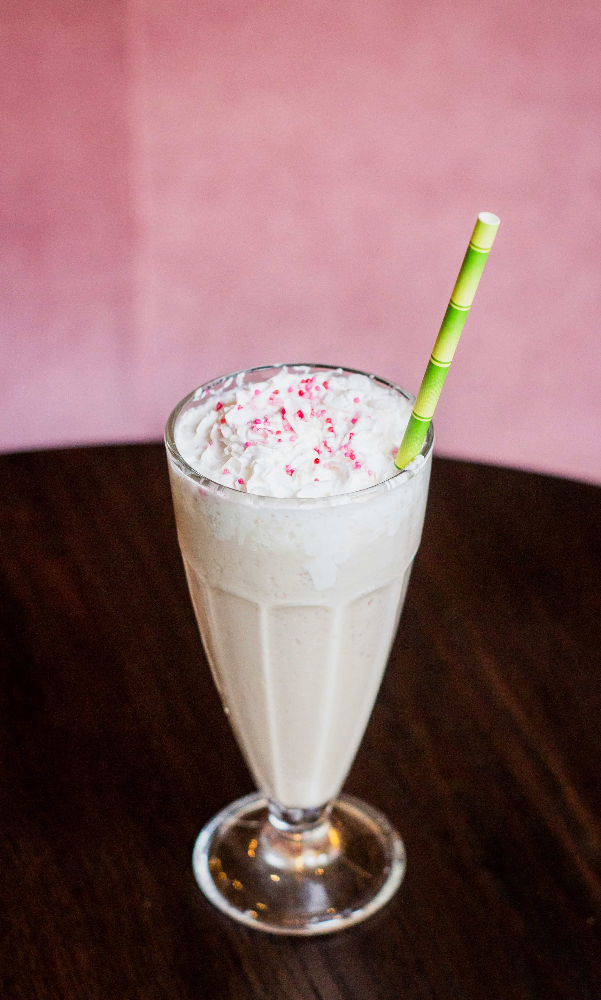

Home
Vanilla Milkshake

Description
Recipe taken from Cooking for my Soul, all credit goes to them.
Making amazing old-fashioned vanilla milkshakes at home is easier than you think! All you need are 3 ingredients. Ready in just 5 minutes.
Ingredients
- 4 to 5 cups high quality vanilla ice cream - plus more to taste
- 1 to 1.5 cups whole milk - plus more as needed
- ½ teaspoon pure vanilla extract - don't use imitation vanilla
Steps
- In a blender, combine the ice cream, milk, and vanilla extract.
- Blend everything on medium speed. If you want your milkshake to be thicker, add more ice cream. Likewise, if too thick, add more milk to taste. Serve immediately and enjoy!